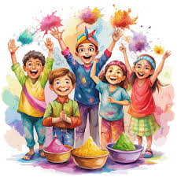
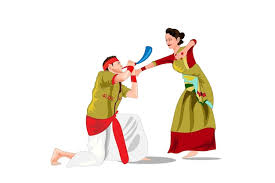

Major Indian Festivals
Diwali
Festival of Lights celebrated across India with lamps, sweets, and fireworks.

Holi
The festival of colors, marking the victory of good over evil and spring's arrival.
Eid
A significant festival for Muslims, celebrated with prayers, charity, and feasts.

Pongal
A harvest festival celebrated mainly in Tamil Nadu with traditional foods and rituals.

Bihu
The Assamese festival celebrating harvest, fertility, and cultural identity.
Christmas
Celebrated by Christians in India to commemorate the birth of Jesus Christ.